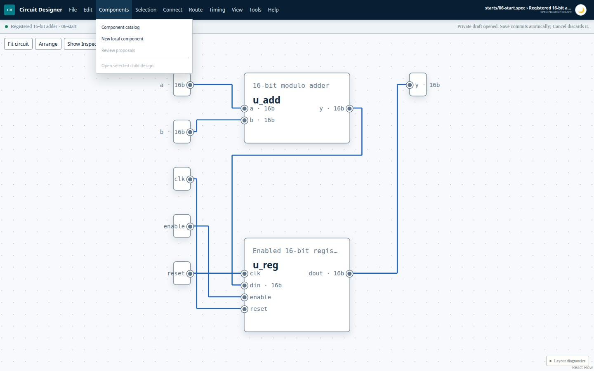
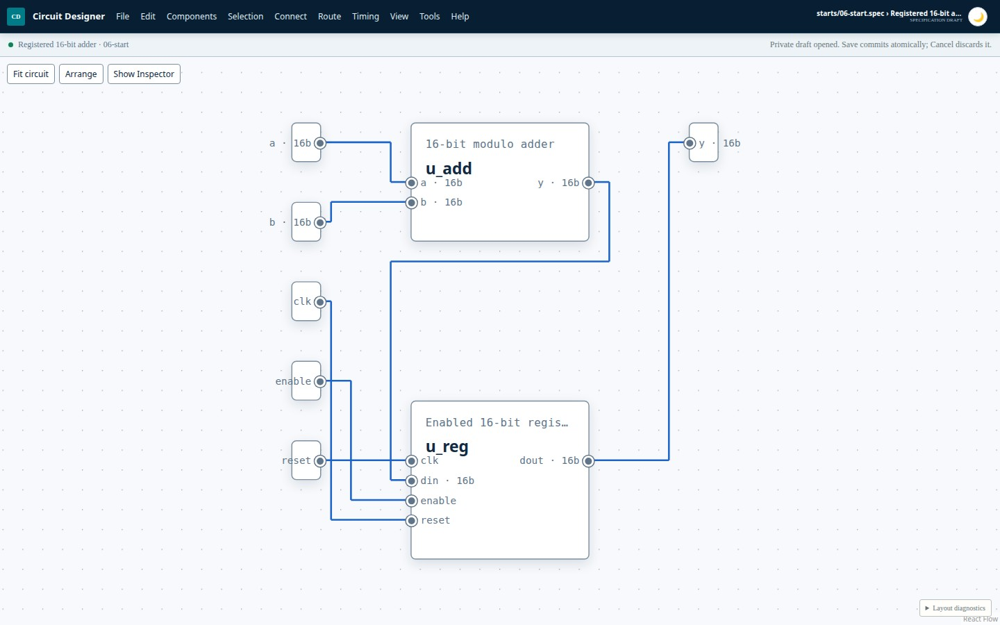

AI ASSISTANT · GUIDED PRACTICE
Review a Circuit proposal
Accept a Circuit proposal into a private draft, then choose whether to save it.
Before you start
Circuit Designer, AI Assistant, and model credentials. Open a source-bound Design with no existing private draft.
Read each action, do it, then compare the expected result before continuing. Use a fresh prepared start to retry. Reading time and automated execution time are not measured learner practice time.
Actions
Open the practice Circuit
Openassistant-circuit-start.specand its internal Design in Circuit Designer. Finish or cancel any private draft.Expected result: The source-bound Circuit has the completed seven-net topology.
Launch a Circuit conversation
Select Tools → AI Assistant and inspect its context.Expected result: The conversation is bound to this Circuit, not a different Spec or independent copy.
Request only placement
Ask: “Move u_reg to the right of u_add for clearer reading. Keep every port, instance reference, wire endpoint, and net name unchanged.”Expected result: The request permits a layout change, not a hardware change.
Inspect the service result
Wait for any review request and confirmed proposal handoff.Expected result: A text description alone is not a Circuit service proposal.
Open proposal review
Return to Circuit Designer and select Components → Review proposals. Inspect the exact proposed placement change.Expected result: The intended proposal is available for a designer decision.

Components lists the proposal review control; it is disabled when no proposal is pending. Select the image to view its full size. Accept into a private draft
Accept the proposal after checking its target. Finish or cancel a competing draft first.Expected result: Acceptance stages a private draft; it does not save the source Spec.

A source-bound private draft still requires Save to Spec. Select the image to view its full size. Compare the staged graph
Inspect both instance references, port widths, and all seven named nets.Expected result: Only placement changed.
Save or cancel and reopen
Select Save to Spec to persist, or File → Cancel changes to discard. Reopen the Design.Expected result: The saved placement agrees with the final decision, not merely the proposal acceptance.


Check your result
The saved result matches your final save or cancel decision. A proposal handoff or acceptance alone is never reported as a saved Spec change.
Try it yourself
Repeat with another small placement request and cancel its accepted draft.
If it fails
If no proposal appears, inspect the Assistant’s last confirmed service result. Do not treat a text description of the layout as a service proposal or saved change.
Continue
CONTINUEExplore another feature →Reference: ai assistant · Complete example